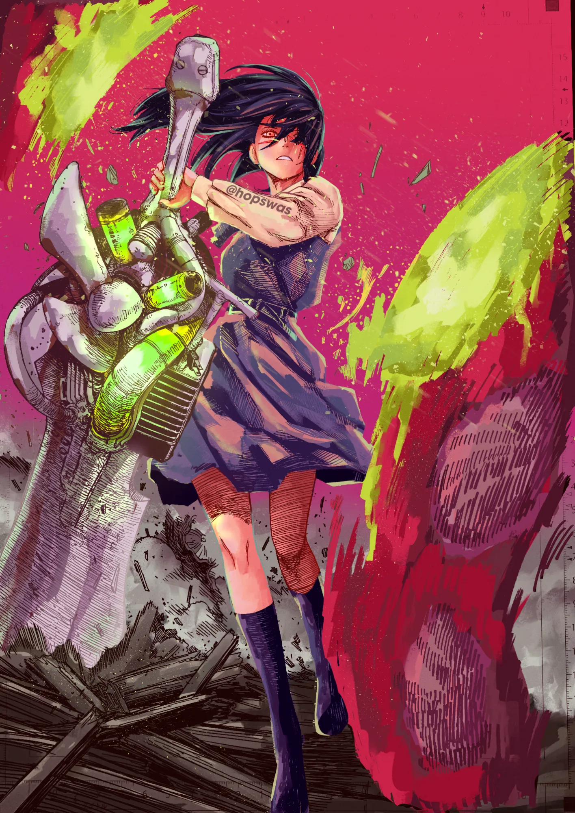

About Me
Hi, I'm Brayden. I'm a student in the Information Technology and Applied Systems (ITAS) program at Vancouver Island University, and I'm working toward a job on a cyber-security development team. Outside of class, I colour manga. I picked it up during lockdown, and now I colour pages in Krita, Clip Studio Paint and Procreate.
Skills
- HTML and CSS
- Digital colouring
- 3D scenes with AI

Projects
-
Join a cyber-security dev team
After ITAS, I'd like to join a development team that builds and tests cyber-security software.
-
Earn CompTIA Security+
I want to earn Security+, a first certification for cyber-security work.
-
Make small games on the side
On the side, I'd like to explore making small indie games and mods.
Contact
- Email: brayden.itas@gmail.com
- GitHub: github.com/Brayden-Brezden